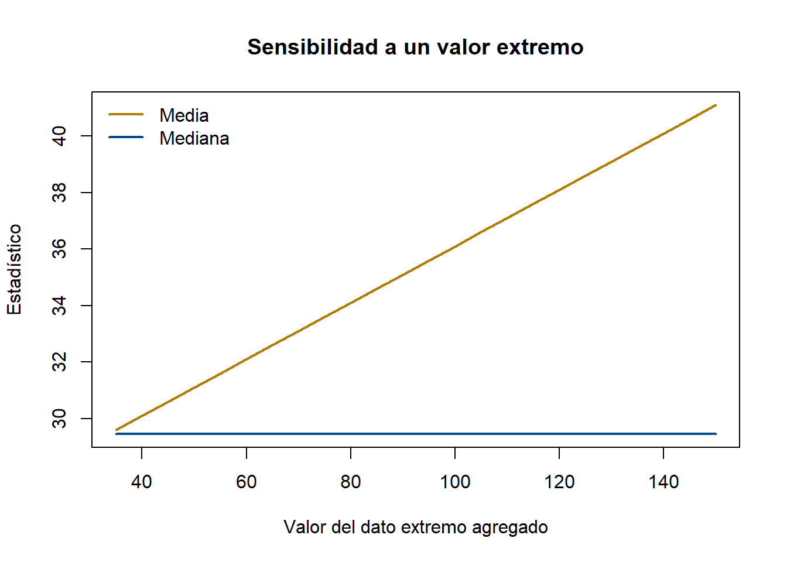

Code
oxigeno <- c(29.5, 49.3, 30.6, 28.2, 28.0, 26.3, 33.9, 29.4, 23.5, 31.6)
mean(oxigeno)[1] 31.03Code
median(oxigeno)[1] 29.45Devore registró el consumo de oxígeno (ml/kg/min) de 10 bomberos durante un simulacro: 29.5, 49.3, 30.6, 28.2, 28.0, 26.3, 33.9, 29.4, 23.5, 31.6. Uno de esos números es muy distinto a los demás. ¿Cómo resumirías “el bombero típico” en un solo número?
Antes de calcular nada: mirando la lista, ¿cuál crees que es un valor razonable para describir el centro? ¿Te parece que el 49.3 debería pesar igual que los demás en ese cálculo?
[1] 31.03[1] 29.45Corre el código. ¿La media y la mediana están cerca o lejos una de otra? Ahora quita el 49.3 del vector (imagina que fue un error de medición) y vuelve a calcular ambas. ¿Cuál de las dos cambió más?
Si un solo dato puede mover tanto la media, ¿por qué seguimos usándola tan seguido en vez de usar siempre la mediana?
set.seed(7)
base <- c(29.5, 30.6, 28.2, 28.0, 26.3, 33.9, 29.4, 23.5, 31.6)
extremos <- seq(35, 150, by = 5)
medias <- sapply(extremos, function(e) mean(c(base, e)))
medianas <- sapply(extremos, function(e) median(c(base, e)))
plot(extremos, medias, type = "l", col = "#B37D00", lwd = 2,
ylim = range(c(medias, medianas)),
xlab = "Valor del dato extremo agregado", ylab = "Estadístico",
main = "Sensibilidad a un valor extremo")
lines(extremos, medianas, col = "#004B85", lwd = 2)
legend("topleft", legend = c("Media", "Mediana"), col = c("#B37D00", "#004B85"), lwd = 2, bty = "n")
La línea de la media sube sin parar a medida que el valor extremo crece — la mediana apenas se mueve. Esto es exactamente lo que dice la teoría: la mediana es robusta ante valores atípicos; la media no.
La medida de localización más utilizada. Para un conjunto de datos \(x_1, \dots, x_n\):
\[\bar{x} = \frac{1}{n}\sum_{i=1}^{n} x_i\]
Usa todos los valores del conjunto — por eso es sensible a valores extremos: un solo dato muy grande o muy pequeño puede desplazarla notablemente.
El valor que queda exactamente en medio cuando los datos se ordenan de menor a mayor. - Si \(n\) es impar, es el valor en la posición \((n+1)/2\). - Si \(n\) es par, es el promedio de los dos valores centrales.
No usa los valores numéricos exactos de los extremos, solo su posición — por eso es robusta ante valores atípicos, y es la medida preferida para distribuciones sesgadas (ingresos, precios de vivienda).
El valor (o categoría) que aparece con mayor frecuencia. Es la única medida de tendencia central que tiene sentido para variables cualitativas — no existe una “media” del color favorito de un grupo, pero sí una moda. Un conjunto de datos puede no tener moda, tener una (unimodal) o varias (bimodal, multimodal).
Cuando no todos los valores tienen la misma importancia, se usa una media ponderada:
\[\bar{x}_w = \frac{\sum w_i x_i}{\sum w_i}\]
Ejemplo típico: el costo promedio de mano de obra cuando distintas tarifas por hora se aplican a distintas cantidades de horas trabajadas — un promedio simple de las tarifas ignoraría cuánto pesa cada una.
Antes de aceptar cualquier promedio, calcula también la mediana — te toma dos líneas de código. Si están cerca, la distribución probablemente es simétrica. Si la media es mayor, sospecha de sesgo a la derecha (valores altos poco frecuentes); si es menor, sesgo a la izquierda. Esta comparación detecta asimetría sin necesitar todavía un histograma. Ver más trucos →
Cuatro casos reales, cada uno enseña algo distinto sobre cuándo confiar en la media y cuándo no.
Caso 1 — Consumo de oxígeno de bomberos (sensibilidad a un extremo):
[1] 31.03[1] 29.45[1] 29.55Caso 2 — Resistencia a la tensión de alambre de cobre (distribución casi simétrica):
[1] 118.5[1] 117.85Caso 3 — Transductores defectuosos por lote (caso bimodal):
defectos
0 1 2 3 4 5 6 7 8
5 8 12 12 6 3 3 1 1 Caso 4 — Ancho de grietas en placas:
[1] 1.618182[1] 1.63Aquí la media (≈1.618) resulta ligeramente menor que la mediana (1.63) — casi iguales, sin una asimetría marcada en ninguna dirección, a pesar de que el dato 2.21 podría hacerte suponer a simple vista que “hay un valor grande jalando la media hacia arriba”. Este caso es justo el recordatorio del truco de interpretación del Tema 4: compara siempre los números reales, no la impresión visual de un solo dato que te llama la atención — un valor que parece “extremo” no siempre domina lo suficiente como para mover la media por encima de la mediana.
Caso 5 — Moda: unimodal, sin moda y bimodal, con los mismos “ingredientes”:
Tres series muy parecidas entre sí ilustran que la moda no siempre existe, ni es única:
serie_a <- c(3, 5, 6, 6, 6, 8, 9, 9, 11, 14) # 6 se repite 3 veces
serie_b <- c(3, 5, 6, 8, 9, 11, 14, 16, 18, 19) # ningún valor se repite
serie_c <- c(3, 5, 6, 6, 6, 8, 9, 9, 9, 16) # 6 y 9 se repiten 3 veces cada uno
moda <- function(x) {
tabla <- table(x)
as.numeric(names(tabla)[tabla == max(tabla)])
}
moda(serie_a) # 6 (unimodal)[1] 6 [1] 3 5 6 8 9 11 14 16 18 19[1] 6 9moda(serie_b) no da un error — devuelve todos los valores, porque todos comparten la frecuencia máxima (1). Es la propia función la que “avisa” que no hay una moda útil: cuando el resultado tiene tantos valores como datos originales, en la práctica quiere decir que no hay moda.
Caso 6 — Mediana con n par, impar y desde una tabla de frecuencias:
[1] 46[1] 186.5[1] 31[1] 2Con n par, median() promedia automáticamente los dos valores centrales (aquí, 184 y 189, dan 186.5) — no hace falta identificarlos a mano como en el cálculo manual, pero es exactamente lo mismo que está pasando por dentro. Y rep(valores, times = frecuencias) es un atajo útil para “desempacar” una tabla de frecuencias de vuelta a un vector de datos individuales, cuando quieres aplicarle funciones como median() directamente.
Con el dataset houses (el mismo de los Temas 0-3):
SqFt. ¿Están cerca o lejos una de otra? ¿Qué sugiere eso sobre la forma de la distribución?Bedrooms (usa names(sort(-table(...)))[1], siguiendo el estilo de Rincón, 2017) — a diferencia de SqFt, esta sí es una variable donde “la moda” tiene un valor claro y útil. ¿Por qué crees que es así?Price y compárala con la media simple. ¿Cambia mucho? ¿Qué te dice eso sobre si hay valores atípicos fuertes en Price?trim = 0.10 — elimina el 10% de los datos más bajos y el 10% más altos antes de promediar.
---
title: "Tema 4 · Medidas de tendencia central"
---
::: {.hero-motivacion}
## 🚒 ¿Cuál es el consumo de oxígeno "típico" de un bombero?
Devore registró el consumo de oxígeno (ml/kg/min) de 10 bomberos durante un simulacro: 29.5, 49.3, 30.6, 28.2, 28.0, 26.3, 33.9, 29.4, 23.5, 31.6. Uno de esos números es muy distinto a los demás. ¿Cómo resumirías "el bombero típico" en un solo número?
:::
::: {.ficha-prediccion}
Antes de calcular nada: mirando la lista, ¿cuál crees que es un valor razonable para describir el centro? ¿Te parece que el 49.3 debería pesar igual que los demás en ese cálculo?
:::
## 🔬 Exploremos: el efecto de un valor extremo
```{r}
oxigeno <- c(29.5, 49.3, 30.6, 28.2, 28.0, 26.3, 33.9, 29.4, 23.5, 31.6)
mean(oxigeno)
median(oxigeno)
```
::: {.ficha-resultado}
Corre el código. ¿La media y la mediana están cerca o lejos una de otra? Ahora quita el 49.3 del vector (imagina que fue un error de medición) y vuelve a calcular ambas. ¿Cuál de las dos cambió más?
:::
::: {.callout-tip}
## Pregunta guía
Si un solo dato puede mover tanto la media, ¿por qué seguimos usándola tan seguido en vez de usar siempre la mediana?
:::
## 🎛️ Simulación: media vs. mediana bajo valores extremos
```{r}
#| label: fig-media-mediana-outlier
#| fig-cap: "Cómo reaccionan media y mediana ante un valor extremo creciente"
set.seed(7)
base <- c(29.5, 30.6, 28.2, 28.0, 26.3, 33.9, 29.4, 23.5, 31.6)
extremos <- seq(35, 150, by = 5)
medias <- sapply(extremos, function(e) mean(c(base, e)))
medianas <- sapply(extremos, function(e) median(c(base, e)))
plot(extremos, medias, type = "l", col = "#B37D00", lwd = 2,
ylim = range(c(medias, medianas)),
xlab = "Valor del dato extremo agregado", ylab = "Estadístico",
main = "Sensibilidad a un valor extremo")
lines(extremos, medianas, col = "#004B85", lwd = 2)
legend("topleft", legend = c("Media", "Mediana"), col = c("#B37D00", "#004B85"), lwd = 2, bty = "n")
```
::: {.callout-note}
## Lo que deberías notar
La línea de la media sube sin parar a medida que el valor extremo crece — la mediana apenas se mueve. Esto es exactamente lo que dice la teoría: la mediana es **robusta** ante valores atípicos; la media no.
:::
## 💡 Discusión
- ¿En qué tipo de variable preferirías reportar la mediana en vez de la media? (piensa en salarios, precios de vivienda)
- ¿Tiene sentido calcular una "media" del color favorito de un grupo de personas? ¿Y una moda?
- Devore también sugiere una **media truncada al 20%**: eliminar el 20% de datos más bajos y el 20% más altos antes de promediar. ¿Por qué alguien haría eso en vez de solo usar la mediana?
## 📖 Ahora sí, la teoría
::: {.panel-tabset}
## Media (Rincón, 2017)
La medida de localización más utilizada. Para un conjunto de datos $x_1, \dots, x_n$:
$$\bar{x} = \frac{1}{n}\sum_{i=1}^{n} x_i$$
Usa **todos** los valores del conjunto — por eso es sensible a valores extremos: un solo dato muy grande o muy pequeño puede desplazarla notablemente.
## Mediana
El valor que queda exactamente en medio cuando los datos se ordenan de menor a mayor.
- Si $n$ es impar, es el valor en la posición $(n+1)/2$.
- Si $n$ es par, es el promedio de los dos valores centrales.
No usa los valores numéricos exactos de los extremos, solo su posición — por eso es **robusta** ante valores atípicos, y es la medida preferida para distribuciones sesgadas (ingresos, precios de vivienda).
## Moda
El valor (o categoría) que aparece con mayor frecuencia. Es la **única** medida de tendencia central que tiene sentido para variables cualitativas — no existe una "media" del color favorito de un grupo, pero sí una moda. Un conjunto de datos puede no tener moda, tener una (unimodal) o varias (bimodal, multimodal).
## Media ponderada
Cuando no todos los valores tienen la misma importancia, se usa una media ponderada:
$$\bar{x}_w = \frac{\sum w_i x_i}{\sum w_i}$$
Ejemplo típico: el costo promedio de mano de obra cuando distintas tarifas por hora se aplican a distintas cantidades de horas trabajadas — un promedio simple de las tarifas ignoraría cuánto pesa cada una.
:::
::: {.callout-tip}
## 💡 Truco de interpretación
Antes de aceptar cualquier promedio, calcula también la mediana — te toma dos líneas de código. Si están cerca, la distribución probablemente es simétrica. Si la media es mayor, sospecha de sesgo a la derecha (valores altos poco frecuentes); si es menor, sesgo a la izquierda. Esta comparación detecta asimetría sin necesitar todavía un histograma. [Ver más trucos →](../recursos.qmd)
:::
## 🧪 Ejemplos reales (Devore)
Cuatro casos reales, cada uno enseña algo distinto sobre cuándo confiar en la media y cuándo no.
**Caso 1 — Consumo de oxígeno de bomberos (sensibilidad a un extremo):**
```{r}
oxigeno <- c(29.5, 49.3, 30.6, 28.2, 28.0, 26.3, 33.9, 29.4, 23.5, 31.6)
mean(oxigeno)
median(oxigeno)
mean(oxigeno, trim = 0.20) # media truncada al 20%
```
**Caso 2 — Resistencia a la tensión de alambre de cobre (distribución casi simétrica):**
```{r}
tension <- c(113.4, 116.5, 116.9, 117.2, 117.4, 117.6,
118.1, 118.5, 119.2, 120.1, 122.1, 125.0)
mean(tension)
median(tension) # deberían quedar muy cerca
```
**Caso 3 — Transductores defectuosos por lote (caso bimodal):**
```{r}
defectos <- c(0,0,0,0,0, 1,1,1,1,1,1,1,1,
2,2,2,2,2,2,2,2,2,2,2,2,
3,3,3,3,3,3,3,3,3,3,3,3,
4,4,4,4,4,4, 5,5,5, 6,6,6, 7, 8)
table(defectos) # busca las dos modas
```
**Caso 4 — Ancho de grietas en placas:**
```{r}
grietas <- c(1.25, 1.31, 1.38, 1.48, 1.59, 1.63, 1.66, 1.70, 1.78, 1.81, 2.21)
mean(grietas)
median(grietas)
```
::: {.callout-important}
## Interpretación del Caso 4 (y una lección de rigor)
Aquí la media (≈1.618) resulta ligeramente **menor** que la mediana (1.63) — casi iguales, sin una asimetría marcada en ninguna dirección, a pesar de que el dato 2.21 podría hacerte suponer a simple vista que "hay un valor grande jalando la media hacia arriba". Este caso es justo el recordatorio del truco de interpretación del Tema 4: **compara siempre los números reales, no la impresión visual de un solo dato que te llama la atención** — un valor que parece "extremo" no siempre domina lo suficiente como para mover la media por encima de la mediana.
:::
**Caso 5 — Moda: unimodal, sin moda y bimodal, con los mismos "ingredientes":**
Tres series muy parecidas entre sí ilustran que la moda no siempre existe, ni es única:
```{r}
serie_a <- c(3, 5, 6, 6, 6, 8, 9, 9, 11, 14) # 6 se repite 3 veces
serie_b <- c(3, 5, 6, 8, 9, 11, 14, 16, 18, 19) # ningún valor se repite
serie_c <- c(3, 5, 6, 6, 6, 8, 9, 9, 9, 16) # 6 y 9 se repiten 3 veces cada uno
moda <- function(x) {
tabla <- table(x)
as.numeric(names(tabla)[tabla == max(tabla)])
}
moda(serie_a) # 6 (unimodal)
moda(serie_b) # ninguno se repite: la función devuelve los 10 valores, todos con frecuencia 1
moda(serie_c) # 6 y 9 (bimodal)
```
::: {.callout-note}
## Lo que deberías notar
`moda(serie_b)` no da un error — devuelve *todos* los valores, porque todos comparten la frecuencia máxima (1). Es la propia función la que "avisa" que no hay una moda útil: cuando el resultado tiene tantos valores como datos originales, en la práctica quiere decir que no hay moda.
:::
**Caso 6 — Mediana con `n` par, impar y desde una tabla de frecuencias:**
```{r}
# n impar (5 edades): la mediana es el valor central directo
edades <- c(32, 42, 46, 46, 54)
median(edades)
# n par (12 salarios): la mediana promedia los dos valores centrales
salarios <- c(135, 164, 168, 172, 176, 184, 189, 190, 210, 220, 225, 235)
median(salarios)
# Desde una tabla de frecuencias (31 registros de ingresos por consulta externa)
ingresos <- rep(0:5, times = c(5, 7, 7, 4, 5, 3))
length(ingresos) # confirma que son 31 registros en total
median(ingresos)
```
::: {.ficha-resultado}
Con `n` par, `median()` promedia automáticamente los dos valores centrales (aquí, 184 y 189, dan 186.5) — no hace falta identificarlos a mano como en el cálculo manual, pero es exactamente lo mismo que está pasando por dentro. Y `rep(valores, times = frecuencias)` es un atajo útil para "desempacar" una tabla de frecuencias de vuelta a un vector de datos individuales, cuando quieres aplicarle funciones como `median()` directamente.
:::
## 🧑🔬 Laboratorio
Con el dataset `houses` (el mismo de los Temas 0-3):
```{r}
houses <- read.csv("../data/house-prices.csv")
```
1. Calcula la media y la mediana de `SqFt`. ¿Están cerca o lejos una de otra? ¿Qué sugiere eso sobre la forma de la distribución?
2. Calcula la moda de `Bedrooms` (usa `names(sort(-table(...)))[1]`, siguiendo el estilo de Rincón, 2017) — a diferencia de `SqFt`, esta sí es una variable donde "la moda" tiene un valor claro y útil. ¿Por qué crees que es así?
3. Calcula la media truncada al 10% de `Price` y compárala con la media simple. ¿Cambia mucho? ¿Qué te dice eso sobre si hay valores atípicos fuertes en `Price`?
## ✅ Ejercicios autocorregibles
### Ejercicio 1 — Completa el código
```r
# Media truncada al 10%: completa el argumento correcto
mean(x, ___ = 0.10)
```
<details>
<summary>Ver respuesta</summary>
`trim = 0.10` — elimina el 10% de los datos más bajos y el 10% más altos antes de promediar.
</details>
### Ejercicio 2 — Verdadero o falso
<div class="card-lab" id="quiz-tema4">
<div style="margin-bottom: 1rem;"><strong>1. La mediana es más sensible a valores atípicos que la media.</strong><br>
<label><input type="radio" name="q1" value="V"> Verdadero</label> <label style="margin-left: 1rem;"><input type="radio" name="q1" value="F"> Falso</label></div>
<div style="margin-bottom: 1rem;"><strong>2. La moda es la única medida de tendencia central válida para variables cualitativas.</strong><br>
<label><input type="radio" name="q2" value="V"> Verdadero</label> <label style="margin-left: 1rem;"><input type="radio" name="q2" value="F"> Falso</label></div>
<div style="margin-bottom: 1rem;"><strong>3. Si media > mediana, hay indicio de sesgo a la izquierda.</strong><br>
<label><input type="radio" name="q3" value="V"> Verdadero</label> <label style="margin-left: 1rem;"><input type="radio" name="q3" value="F"> Falso</label></div>
<button class="btn-outline-prediccion" style="padding: 0.5rem 1rem; border-radius: 4px; cursor: pointer;" onclick="revisarQuizTema4()">Revisar respuestas</button>
<p id="resultado-quiz-tema4" style="margin-top: 1rem; font-weight: 700;"></p>
</div>
<script>
function revisarQuizTema4() {
const respuestas = { q1: "F", q2: "V", q3: "F" };
// Exigir que todas las preguntas estén respondidas antes de revelar el resultado
const sinResponder = Object.keys(respuestas).filter(
p => !document.querySelector(`input[name="${p}"]:checked`)
);
const resultadoEl = document.getElementById("resultado-quiz-tema4");
if (sinResponder.length > 0) {
resultadoEl.textContent = "Responde todas las preguntas antes de revisar.";
resultadoEl.style.color = "#B37D00";
return;
}
let correctas = 0;
for (const [p, c] of Object.entries(respuestas)) {
const s = document.querySelector(`input[name="${p}"]:checked`);
if (s && s.value === c) correctas++;
}
const r = document.getElementById("resultado-quiz-tema4");
r.textContent = `Obtuviste ${correctas} de ${Object.keys(respuestas).length} correctas.`;
r.style.color = correctas === Object.keys(respuestas).length ? "#004B85" : "#B37D00";
}
</script>
## 🗂️ Resumen
::: {.card-lab}
- La media usa todos los datos pero es sensible a valores extremos; la mediana es robusta pero ignora las magnitudes exactas.
- La moda es la única medida válida para variables cualitativas, y puede haber más de una.
- Si media > mediana, hay indicio de sesgo a la derecha; si media < mediana, sesgo a la izquierda; si son casi iguales, la distribución tiende a ser simétrica.
:::